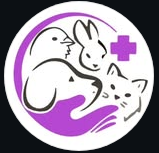
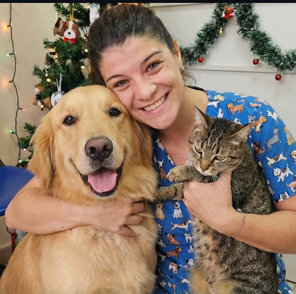
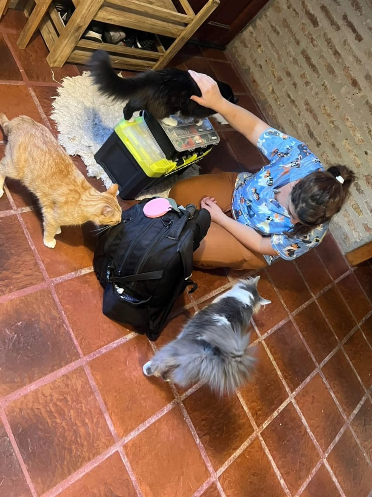
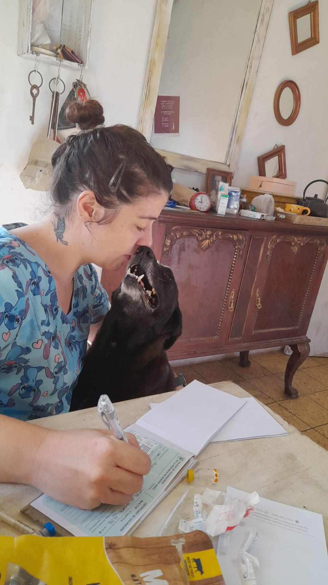
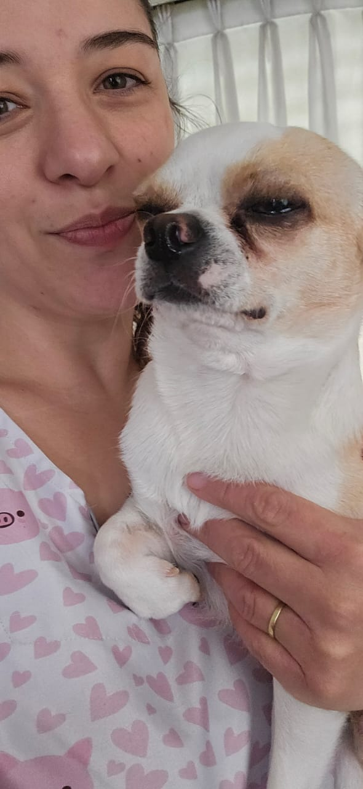

Dra. Jésica Guaraglia EscribimeConsultas, vacunación y seguimiento a domicilio en la zona sur del Gran Buenos Aires. Tu perro o tu gato se atiende tranquilo, en su lugar de siempre.
Médica Veterinaria · MP 15449 · Universidad Nacional de La Plata


Me contás qué le pasa a tu mascota y coordinamos día y horario para la visita.
Llego con todo lo necesario: revisación clínica, vacunas, toma de muestras y lo que la consulta requiera.
Quedamos en contacto por el tratamiento, los resultados y cualquier duda que aparezca después.
Zona sur del Gran Buenos Aires:
Soy Jésica, médica veterinaria recibida en la Universidad Nacional de La Plata (promoción 2021), matrícula profesional 15449. Atiendo a domicilio porque estoy convencida de que los animales se examinan mejor donde se sienten seguros: en su casa.
Atiendo en español y en inglés.
Mi sueño es tener una veterinaria móvil para llegar a más peludos de la zona. Mientras tanto, voy consulta por consulta, casa por casa. ❤️

Opiniones públicas de Facebook, donde tiene el 100% de recomendación.
5,0 en Google
«Es lo más, como médica y como ser humano.»
«Excelente atención y cuidados. Dejan siempre hermosa a Milonga y la miman un montón.»
«Vino a casa el mismo día que la llamé. Mi gata no se estresó nada, ni se dio cuenta de que la revisaron.»
«Explica todo con paciencia y después te escribe para preguntar cómo sigue. Se nota que le importa.»
«Vacunó a los dos perros en casa, sin transportadora ni viaje. No vuelvo a la veterinaria de la esquina.»
Respondo por WhatsApp, es la forma más rápida de encontrarme.
WhatsApp: +54 9 11 3901-3840